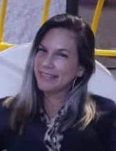
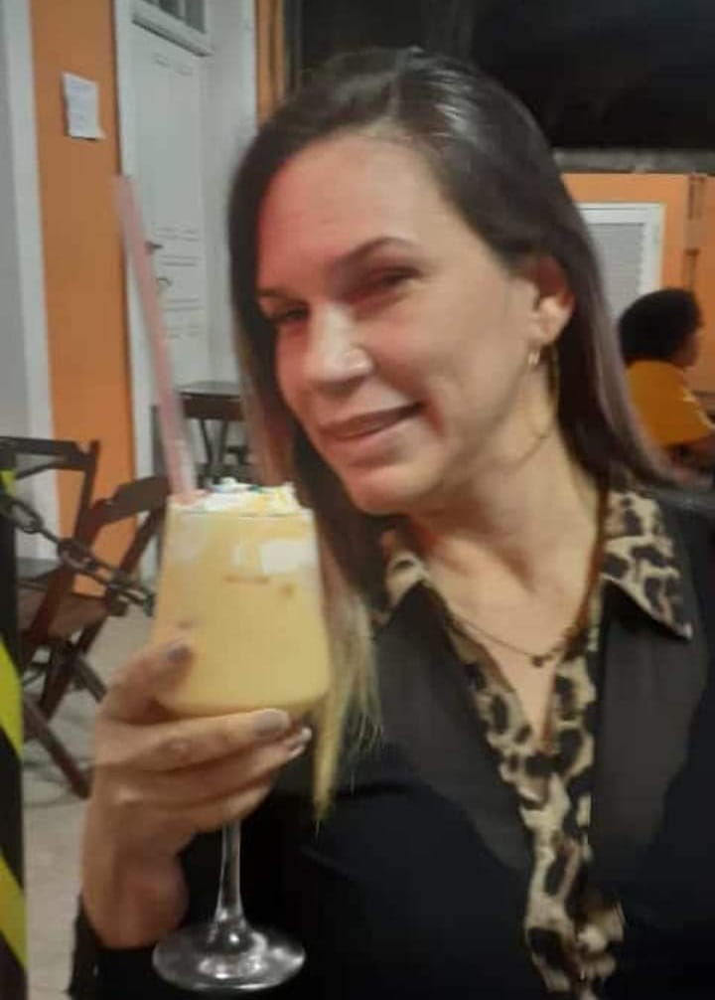
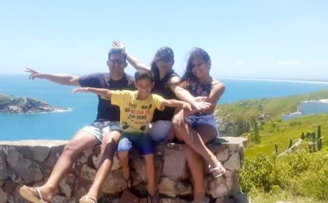
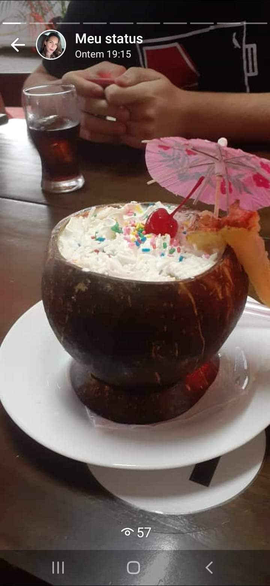

Minha frase
"Cada dia tem um novo despertar pois cada começo representa uma nova oportunidade para recomeça"
Olá! Eu sou Gladis Contreras estou iniciando no mundo da programação vamos conhecer um pouco mais sobre mim
Nasci em 10 de janeiro de 1978, na Venezuela, na cidade de San Felix, Estado Bolívar, Venezuela, filha única de 8 irmaos homens, sendo meu pai motorista e minha mãe enfermeira, Posso dizer que minha infância foi muito feliz e muito mimada por todos os meus parentes,Terminei o ensino médio em 1995. Comecei meus estudos em Engenharia Industrial em 1996, quando tinha 18 anos e tive meu primeiro filho no mesmo ano


Trabalhei como recepcionista em uma clínica particular enquanto estudava por 4 anos, depois fui fazer meus estágios baseados na atualização de custos e reengenharia de um processo produtivo de uma empresa que produzia ânodos de carbono, depois fui trabalhar como auxiliar administrativo no Departamento de Engenharia de uma empresa metalmecânica onde também fui treinado como auditor interno de qualidade para manter as certificações das normas iso9001, depois fui trabalhar como coordenadora de processos em outra empresa metalmecânica onde fiquei apenas 3 meses , pois surgiu uma nova oportunidade em uma mineradora como analista de planejamento e controle, este cargo abrangeu os controles e acompanhamento de custos, compras, controle de qualidade e processo produtivo, análise estatística, até a elaboraçao das certificaçoes de qualidade dos productos vendidos


Amo passear, ir à praia, curtir o ar livre, boa comida, boa bebida, boa companhia, me vestir bem, dançar, ouvir música, assistir filmes, curtir o tempo em família, e por que não? passar um dia inteiro de folga dorme
  Para o ano de 2019 resolvi buscar novos horizontes e vim morar no Brasil, em 2020 foi o início da Pandemia que levou muita gente a reinvestir e sugeriu novas oportunidades e busca de emprego a partir daí surgiu a oportunidade de se candidatar ao curso com a organização Toti iniciando minha formação como Desenvolvedor Frontend, com apoio do Instituto Nubank
"Cada dia tem um novo despertar pois cada começo representa uma nova oportunidade para recomeça"
Me capacitar para me tornar um desenvolvedor frontend e fazer desta nova oportunidade um novo começo de trabalho, fazer páginas web, fazer projetos para ampliar meus conhecimentos e obter mais experiências que me levem a executar outras formas de programação.